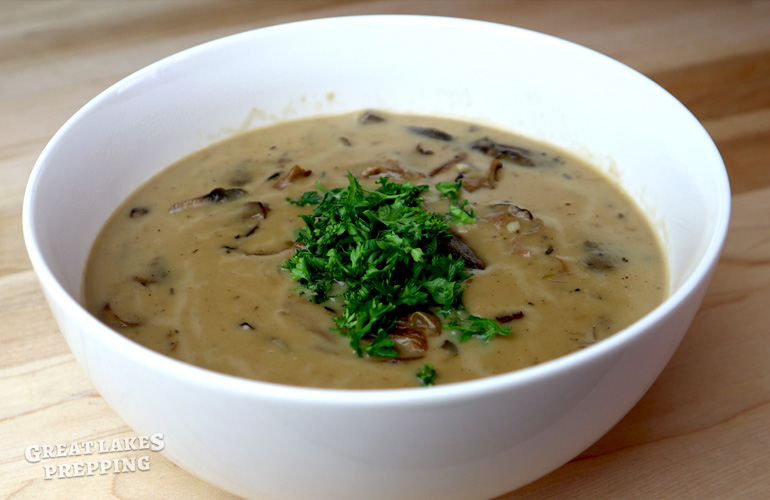

Mushroom Soup

Ingredients
- 2 ounces dry wild mushrooms
- 1/2 cup shallots, minced
- 3 cloves garlic, minced
- 1/2 pound fresh cremini mushrooms (these are also called Baby Bella mushrooms)
- 1 tablespoon olive oil
- 5 tablespoons butter
- 1/2 cup all-purpose flour
- 1/3 cup cooking sherry
- 4 cups chicken stock
- 1 cup mushroom water, see instructions
- 1/2 cup heavy cream
- 1 teaspoon salt
- 1/2 teaspoon black pepper
- 1/2 teaspoon dry thyme
- 2 bay leaves
- 1/4 cup parsley, chopped
Instructions
- Place the dry wild mushrooms in a saucepan or bowl and cover with hot water (the hottest water you can get from your faucet). Let the mushrooms soak for half an hour, and then strain. Important: Be sure to save 1 cup of the mushroom water, to add to the soup later.
- Roughly chop the hydrated wild mushrooms.
- Heat 2 tablespoons of butter and 2 tablespoons olive oil in a medium-sized stock pot over medium-high heat. Saute the shallots until translucent but not brown. Add the garlic and cook for 1 more minute.
- Add the fresh cremini (baby bella) mushrooms and cook for about 5 minutes. Then add the wild mushrooms. Lower heat to medium-low and cook for 10-12 minutes.
- Add the cooking sherry (sherry is best, but you can substitute for dry white wine). Turn heat back to medium-high. Using a wooden spoon, scrape loose any bits that may be stuck to the bottom of the pot.
- Stir in 3 tablespoons butter until melted. Add in the flour and stir until everything is thoroughly coated. Cook for 2 minutes.
- Add the chicken stock and 1 cup of the mushroom water. Stir everything thoroughly.
- Add the salt, black pepper, thyme, and bay leaves.
- Allow everything to come up to a low boil, and then reduce heat to simmer. Cover the pot and simmer for 20 minutes.
- Remove bay leaves, and stir in the heavy cream.Remove bay leaves, and stir in the heavy cream.
- Garnish with parsley and serve.